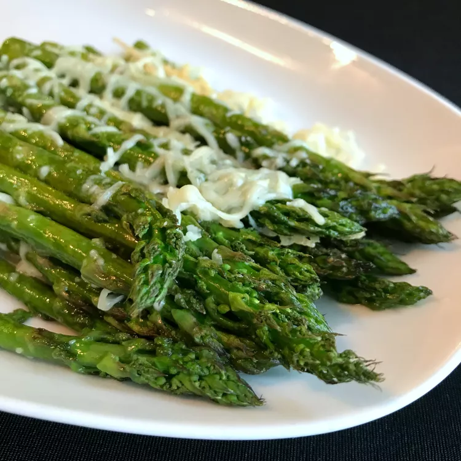

Roasted Asparagus with Parmesan

Description: How to Make Roasted Asaparagus with Parmesan
Arrange the asparagus spears in a single layer in an oiled casserole dish, then spray with olive oil.
Evenly sprinkle the asparagus with Parmesan, salt, and garlic powder. Roast in a preheated oven until the thickest part of the stem is
easily pierced with a fork.
Ingredients
- 1 pound fresh asparagus, tough ends trimmed
- 1 teaspoon sea salt
- Olive oil cooking spray
- 1/4 cup shredded parmesan cheese
Steps:
- Preheat oven to 400 degrees F (200 degrees C).
- Spray the inside of a 9x13 casserole dish with olive oil cooking spray. Place asparagus in the dish and
lightly spray spears with cooking spray.
- Sprinkle asparagus with Parmesan cheese, sea salt, and garlic powder.
- Roast in preheated oven until fork easily punctures thickest part of stem, about 12 minutes.